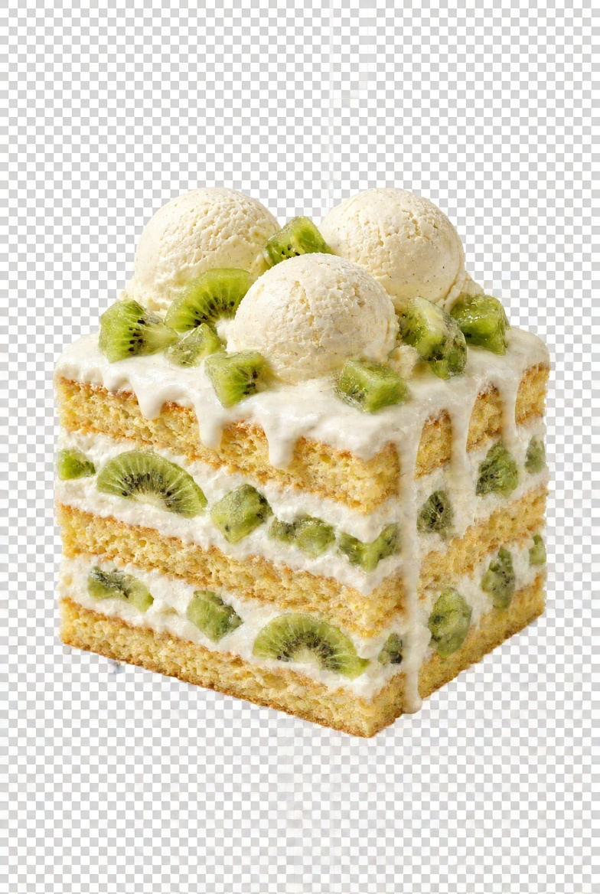

Примечания:
Разогреть духовку до 180°C. Смазать маслом форму диаметром 20 см, дно выстлать пергаментной бумагой. Смешать расторленный шоколад маслом
Стереть желтки с сахаром, взбить в густую пену, смешать с шоколадной массой. Постепенно втереть муку и ядра орехов. Взбить белки в крутую пену, втереть в тесто.
Выложить тесто ровным слоем в форму. Выпекать в духовке до готовности (около 30 мин.). Вынуть из духовки, охладить на решетке, поставить в холодильник.
Для мороженого взбить желтки с сахарной пудрой в густую пену. В другой посуде взбить сливки с ликером, влить в желтковую смесь, добавить пюре киви, тщательно перемешать.
Разрезать корж на 2 части по горизонтали, положить нижнюю половину в форму, залить желтково-сливочной массой, разровнять верх и положить верхнюю половину коржа. Поставить в морозильник на 4-5 часов.
Переложить торт на блюдо. Для украшения взбить сливки с сахарной пудрой и эссенцией. Переложить 1/4 часть крема в кондитерский мешочек, остальными сливками смазать верх и бока торта.
Натереть шоколад, прилепить к боковой поверхности. Украсить верх торта розочками из сливок и ломтиками киви.